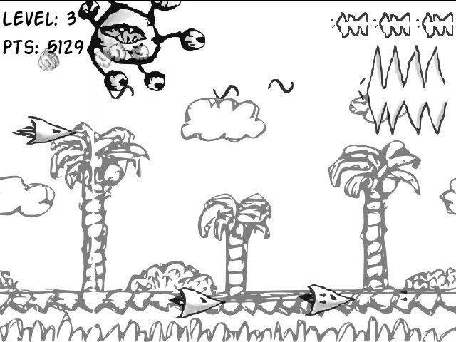

This is a rough list of some of the projects and work I've been involved with.
It is ordered by year (most recent first).
This list is not complete and may be updated in the future.
Each entry contains:
This list goes from 2007 to 2017. There is also a list of newer projects.
2017 Project: I Have A Stream Period: 48 hours Status: completed Description: Summary: Game made in Unity3D for 4th Komiks Game Jam at 28th International Festival of Comics and Games in Lodz Roles: programmer Team size: 5 (3 programmers, 2 graphic artists) Technologies: Languages: C# Engine: Unity3D, experimental Linux version Version control: Git Links: Playable browser version: https://vistritium.itch.io/i-have-a-stream Playable browser version mirror: http://stream.maciejnowicki.com/index.html Gameplay videos:
GitLab: https://gitlab.com/virtual92/KomiksGameJam2017 2016 Project: Aega Period: one semester (5 months) Status: completed Description: Summary: Unreal Engine 4 game Roles: main interface programmer, visual scripting Team size: < 10 Technologies: Languages: Blueprint Visual Scripting, JavaScript Engine: Unreal Engine 4 Version control: Perforce Hardware: gamepad Links: Facebook: https://www.facebook.com/aegagame/ Gameplay videos:
|
Notes: I participated in the project as part of classes at Technical University of Lodz and not outside this scope. The project was further developed by some of the members of the original team, later extended by new. Project: Zippy Web Race Period: one semester (5 months) Status: completed Description: Summary: A simple game in JavaScript, which uses Wii console's Wiimote as the main controller. This is achieved by using a pluggable intermediate/middleware app in Node.js, which communicates with the front-end part (the game) through a WebSocket, passing information from the C++ back-end, which uses a Wiimote library to talk to the controller. Communication with the back-end is achieved by means of inter-process communication. Team size: 3 Roles: programmer Technologies: Languages: JavaScript, C++ Environments: Node.js Modules: node-ipc (for local Inter Process Communication) Hardware: Wiimote for Wii Links: Gameplay video:
Project: Software raytracer and renderer in JavaScript Period: one semester (5 months) Status: completed Description: Summary: Implemented a software raytracer and renderer in JavaScript from scratch. This involved implementation of a math library for managing vectors, matrices and other mathematical objects as well as simple .obj parser. Technologies: Languages: JavaScript Links: GitHub: https://github.com/djedr/js_renderer 2015 Project: Audi Joyride Period: one semester (5 months) Status: completed Description: Summary: a Unity3D game made for Audi as a part of a competition. Team size: 5 Technologies: Languages: C# Engine: Unity3D Links: GitHub: https://github.com/Vistritium/The-Light- Media Gameplay video:
Project: A prototype of a real-time strategy (RTS) game on Unreal Engine 4 Period: ~2 months Status: completed Description: Summary: A collaborative project. The goal was to develop a prototype of an RTS game on top of Unreal Engine 4, examine and describe various parameters of the system and propose optimization possibilities Tasks: AI implementation and measurement of relationship of number of AI units to game frame rate Team size: ~6 Role: AI programmer, researcher Technologies: Languages: Blueprints Visual Scripting Engine: Unreal Engine 4 Links: Report in Polish: https://docs.google.com/document/d/1vNnJADn69Q02vaYTtclFCPalS68Ij90ZPh3p3ocCMFA/pub Project: An emotion-recognition application Period: one semester (5 months) Status: completed Description: Summary: Part of a larger application, which demonstrates biometric techniques of speech and emotion recognition. I was the main developer of the module, which does face recognition and simple emotion recognition (smile, sadness, frown). Tasks: module development, integration of modules Roles: module leader, programmer Team sizes: Emotion recognition module: 2 Audio recognition module: 2 Technologies: Languages: C, C++ Libraries: OpenCV Links: Report in Polish: https://docs.google.com/document/d/1yI5cevYwGTnOmP5xvdTMva8xtwUACNXTrrVKB75RWjg/pub 2014 Project: Frogger clone for a microcontroller Period: one semester (5 months) Status: completed Description: Summary: A clone of the classic Frogger game for a microcontroller. Written in C. Team size: 3 Roles: team leader, programmer Technologies: Platform: embedded Languages: C Hardware: Name: LPC2103 Education Board Description: a simple microcontroller extended with a small 256-color display Links: GitHub: https://github.com/Vistritium/frogger---systemy-wbudowane Documentation in Polish: https://docs.google.com/document/d/13TrMJNpzOgk-y1-DD2jQypkYj4CYQPc473BK7LVEId4/pub Project: Near- and far-sightedness simulation in Unreal Engine 4 Period: 2 months Status: completed Description: Description: An application, which simulates visual distortions caused by near- and far-sightedness. Role: leader, programmer Team size: 2 Technologies: Languages: C#, Blueprints Visual Scripting Engines: Unity3D, Unreal Engine 4 Links: Presentation in Polish: https://docs.google.com/presentation/d/1OVtLC7NekSbZf7XETf9goonYk1ZUCesJmIPKrRWKFYU/pub?start=false&loop=false&delayms=3000 Project: A business website for Marketing classes Period: 2.5 months Status: completed Description: Team size: 2 Roles: programmer, designer Technologies: Languages: JavaScript, HTML, CSS/LESS Frameworks: Bootstrap Links: GitHub: https://github.com/Vistritium/MarketingPage Description in Polish: https://docs.google.com/document/d/1FqSdF4yLodOjSN4n11OiZI1DuTQuT3Biu9dXTy4PjFI/pub Project: Get To The Core Period: weekend Status: completed Description: Summary: A simple game in Lua for Ludum Dare competition #29. The theme of the competition was Beneath the Surface. Technologies: Languages: Lua Engine: LÖVE Links: Ludum Dare entry: http://ludumdare.com/compo/ludum-dare-29/?action=preview&uid=35204 Project: 15 puzzle solver Period: ~1 month Status: completed Description: Summary: I implemented a program in C, which can solve the 15 puzzle using different algorithms, including Depth-First Search, Breadth-First Search, A* and variants of these, which use heuristics. Then, using this program I thoroughly examined the effectiveness of each algorithms in terms of speed. Technologies: Languages: C Tools: gnuplot Links: Wikipedia description of the puzzle: https://en.wikipedia.org/wiki/15_puzzle Report in Polish: http://djedr.github.io/pdf/15_puzzle.pdf Project: Angry Metal Through Time Period: ~2 months Status: completed Description: Summary: A 1D turn-based strategy game featuring fuzzy logic and competing agents. The game is intended to be played by AI agents who use fuzzy logic to make decisions. Team size: 5 Role: programmer, designer Technologies: Languages: C#, FuzzScript Libraries: FuzzScript Version control: SVN Links: Report in Polish: http://djedr.github.io/pdf/AMTT.pdf FuzzScript's home page: https://www.codeproject.com/articles/47795/fuzzscript-a-fuzzy-logic-control-language 2013 Project: Music video game prototype Period: ~3 months Status: completed Description: Summary: a dynamic, music-based video game for Android, controlled by gestures drawn on the screen. Features random level generation. Team size: ~5 Roles: programmer, designer Technologies: Engine: Unity3D Platform: Android Languages: UnityScript (JavaScript dialect) Libraries: $P Recognizer (translated to UnityScript and tweaked) Links: $P Recognizer's website: https://depts.washington.edu/aimgroup/proj/dollar/pdollar.html Project: The Planet is Fine Period: ~1 month Status: completed Description Summary: a space game made in Game Maker. Features procedural graphics, spaceships, planets, gravity. Technologies: Languages: GML (Game Maker Language) Environments: Game Maker Project: A Pac-Man clone with a twist Period: ~1 month Status: completed Description Summary: a Pac-Man clone made in Game Maker with changed mechanics. The maze is constructed out of circular obstacles -- planets. Pacman moves continuously, orbiting the planets. Game is controlled with one key, which is used for moving from planet to planet. Technologies: Languages: GML (Game Maker Language) Environments: Game Maker Project: SŁODZIK -- System Łatwej Obsługi Dziekanatu Period: ~2 months Status: completed Description: Summary: A GUI application in Java, which manipulates a database, which contains information about students and grades and generates various plots from that data. Team size: 2 Role: team leader, main programmer Technologies: Languages: Java, SQL Database: SQLite Libraries: JFreeChart, ORMLite Project: Heroes of Might and Magic III clone Period: one semester (5 months) Status: completed Description: Summary: a clone of the classic Heroes of Might and Magic III game in Java for OOP classes Team size: ~6 Role: combat system programmer Technologies: Languages: Java Engine: Slick2D Version control: SVN Links: Combat system documentation: https://docs.google.com/document/d/1x0pbAyWv9KGGqA5s7Rv15QVK_n9FvTxsfx7--NtdUCE/pub Project: An application which simulates cellular automatons, notably Conway's Game of Life Period: ~2.5 months Status: completed Description: Summary: An application which simulates cellular automatons, started out as an extension of Conway's Game of Life. Features two simple scripting languages. First, high-level, for controlling the simulation. Embedded in this language is another, low-level Brainfuck-like language, for manipulating the cells. It's different from Brainfuck in that it operates on a 2D grid instead of 1D tape, so it has commands for moving in two spatial dimensions. The user can change the rules of the game, creating different cellular automatons. Team size: 2 Role: team leader, main programmer Technologies: Languages: C, C++, scripting DSLs Libraries: SFML, ncurses Tools: Doxygen + GraphViz Links: Documentation in Polish: http://djedr.github.io/pdf/GoL.pdf Readme in Polish: http://djedr.github.io/txt/gol-readme 2011 Project: Vortex Period: 24 hours Status: completed Description: Summary: A game for 24 hour game development competition at Zjazd Twórców Gier 2011 (now Game Industry Conference) Team size: 2 Role: graphic artist Technologies: Languages: C++ Libraries: SFML Tools: Gimp Links: Conference's current home page: http://gic.gd/en/ 2009 Project: Various games written in D Description: Summary: Mostly written for game development competitions. Feature hand-drawn quirky graphics, badly recorded audio, hand-made fonts. Technologies: Languages: D Libraries: DSFML, Tango Project: Various applications written in C++ Description: Summary: Among these: an application for controlling a hand-made binary clock through LPT port. A GUI application written in C++ with Qt, which provides an interface for controlling the behavior of a stepper motor. Technologies: Languages: C++ Frameworks: Qt Hardware: stepper motor, a binary clock made of LEDs and an LPT cable 2008 Project: Various websites Description: Summary: Mostly personal websites for publishing my content: comics, short stories, drawings, music, English to Polish translations. Also some websites for "clients". Feature custom picture galleries, comment systems, etc. Technologies: Languages: PHP, (X)HTML, CSS Project: A Content Management System written in PHP Period: ~2 months Status: closed Description: Summary: Featured post and comments systems, configurability, internationalization, administration interface. An interesting albeit quirky feature of the system was that data was stored in .php files used similarly to JSON. It was read simply by PHP's parser and updated by editing files with the help of some regular expression magic. Technologies: Languages: PHP, (X)HTML, CSS Project: PAJonK Period: ~14 days Status: completed Description: Summary: A side-scrolling shoot 'em up game for a game development competition. Features quirky graphics. The game was remade in 2013 in JavaScript. Role: graphic artist Team size: 2 Technologies: Languages: C++ Tools: MS Paint Links: Remake project's page: http://warsztat.gd/projects/Pajonk/info Media:  Project: pwn3d Period: ~7 days Status: completed Description: Summary: A console-based turn-based strategy game emulating graphics with text. Written for a game programming competition. The game was compared by players to Advance Wars. Features a level editor. Technologies: Languages: C++ Project: Various games written in C++ Description: Summary: Mostly written for game development competitions. Mostly console/command-line based. Feature graphics simulated with text and 16 console colors. Technologies: Languages: C++ 2007 Project: Posłaniec Period: ~1 month Status: completed Description: Summary: A Single-User Dungeon (SUD) game, which is a single-player offline equivalent of a Multi-User Dungeon (MUD) game. This was the first non-trivial game that I developed in C++. Technologies: Languages: C++ Links: Wikipedia article on MUDs: https://en.wikipedia.org/wiki/MUD Early years My experience with application development started around 2002, when I created my first computer game using The Games Factory, a visual game development tool. I started learning my first programming language, C++, around 2004. I was involved in a major Polish game development community based around the website gamedev.pl (later moved to warsztat.gd, no longer online today; archives: gamedev.pl, warsztat.gd), participating in game development competitions, even organizing one. I was also briefly involved in the development of Warlock's Gauntlet – a major project written in C++, created by members of the communtiy. I learned the basics of the Squirrel scripting language as a part of this project. I went on to learn many more programming languages (such as C, D, Vala, Pascal), writing computer games for competitions and various small projects. I also got interested in web development, learning some (X)HTML, CSS, PHP, basic JavaScript, SQL and creating websites and a content management system.